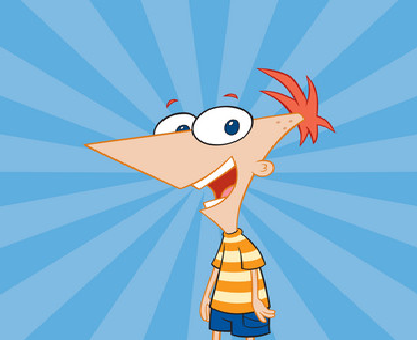

Phineas Flynn es un personaje ficticio protagonista de la serie original de
Disney Channel Phineas y Ferb, creado por Dan Povenmire y Jeff Swampy
Phineas junto con su hermanastro Ferb Fletcher, protagonizan la trama
principal de cada episodio de la serie
